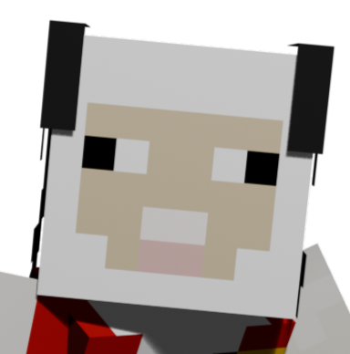
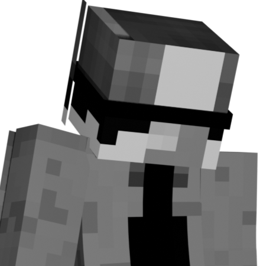
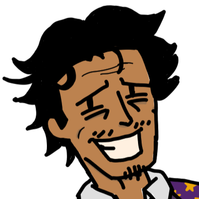
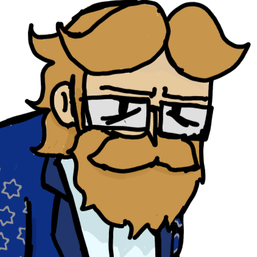
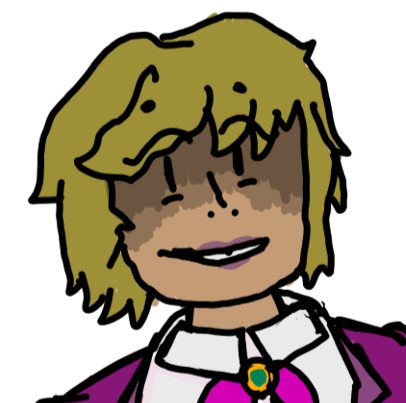
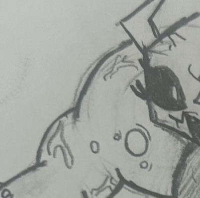
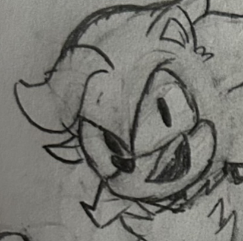
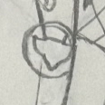

Good Morning, Good Afternoon, Good Evening, or Goodnight to anyone reading this little resume of mine. My name is Joshua Wysluzaly, or usually Mr. Incognito/Curator online. I was born August 22nd, 2006 in Warrensburg, Missouri. After some moving around with my family, we finally settled down in Florida.
Currently, I am in my second year at Seminole State College on the Lake Mary/Sanford campus, but I will be taking a transfer over to UCF to better pursue my Graphic Design and Digital Media degree.







